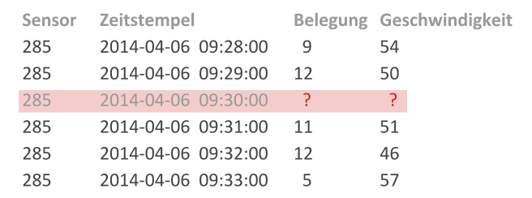

MAGDa - Management und Analyse Geotemporaler Daten
Bereinigung von Missing Data in Zeitreihen
Posted am 03.04.2017Um den Verkehrsfluss auf innerstädtischen Straßen zu steuern und auch während Stoßzeiten zu erhalten, werden in vielen Städten Verkehrsmanagementsysteme genutzt. Sie registrieren und analysieren den aktuellen Verkehr und ermitteln Prognosen. Dadurch können mithilfe gezielter Ampelschaltungen Stau und überfüllte Kreuzungen verhindern werden. Die Daten können außerdem in Anwendungen für den Individualverkehr genutzt werden, in denen beispielsweise Routingempfehlungen an die aktuelle Verkehrslage angepasst werden. Wartungsarbeiten oder Ausfälle der zur Verkehrszählung eingesetzten Sensoren führen jedoch dazu, dass die Daten nur unvollständig verfügbar sind (siehe Beispieldaten unten). Viele Datenanalyse- und -verarbeitungsmethoden wie z. B. Methoden zur Mustererkennung oder Verkehrsprognose sind jedoch auf lückenlose Datasets angewiesen.
Um die vorhandenen Daten dennoch nutzen zu können, ohne lückenbehaftete Zeiträume zu entfernen, gibt es verschiedene Methoden, mit denen fehlende Werte geschätzt und in die Lücken eingesetzt werden können.
Zur Überprüfung der Genauigkeit dieser Methoden werden in vollständige Testsets künstlich Lücken eingefügt (siehe Abbildung unten). Diese Lücken werden durch die Anwendung einer Strategie bereinigt. Die dadurch entstandenen Schätzwerte werden mit den Orginalwerten des Testsets verglichen und somit der durchschnittliche Fehler berechnet.
Dieser Vorgang wird für verschiedene Strategien und unterschiedliche Lückenlängen wiederholt. Die Ergebnisse sind im untenstehenden Diagramm dargestellt (NRMSE: Normalized Root Mean Square Error). Für kurze Lücken bis zu zwei Stunden eignet sich der Einsatz eines Basic Structural Models. Dabei wird die Zeitreihe anhand der Komponenten Trend, Saisonalität und Rest modelliert und die fehlenden Werte mit Hilfe eines Kalmanfilters errechnet. Diese Methode ist unter dem Namen na.kalman im R-Paket imputeTS enthalten. Für längere Lücken wird sie jedoch ungenau, sodass in diesem Fall das Einsetzen von Werten der Durchschnittswoche empfohlen wird. Dafür wird aus allen bekannten Daten eines Sensors der durchschnittliche Verlauf berechnet, wobei auch Feier- und Brückentage berücksichtigt werden sollten. Lücken werden daraufhin mit den entsprechenden Durchschnittswerten gefüllt. Die Methoden Weighted MA (Moving Average) und Lineare Interpolation liefern für kurze Lücken ebenfalls akzeptable Ergebnisse, können jedoch nicht gegenüber den beschriebenen Methoden beweisen.
Die gewonnenen Erkenntnisse werden genutzt, um ein Programm in Form eines R-Pakets zu implementieren. Ziel ist die vollständige Bereinigung der Daten aller Verkehrssensoren.
Der grobe Programmablauf ist in der untenstehenden Abbildung dargestellt. Unvollständige Datasets werden aus csv-Dateien eingelesen, vorverarbeitet und fehlende Werte bereinigt. Die Ergebnisse werden für die weitere Nutzung wieder in csv-Dateien zur Verfügung gestellt.
Obwohl die damit erzeugten Datasets keine fehlenden Daten mehr aufweisen, muss bei der weiteren Verarbeitung berücksichtigt werden, dass es sich dabei nur um Schätzwerte handelt, die durchaus von den tatsächlichen Werten abweichen können. Außerdem sollte bei der Bereinigung besonders langer Lücken in Betracht gezogen werden, die Lücke als solche zu akzeptieren und das betroffene Dataset aus der weiteren Nutzung auszuschließen. Solche Fragen sind immer abhängig von der geplanten Nutzung der Daten zu klären und können nicht allgemein beantwortet werden.